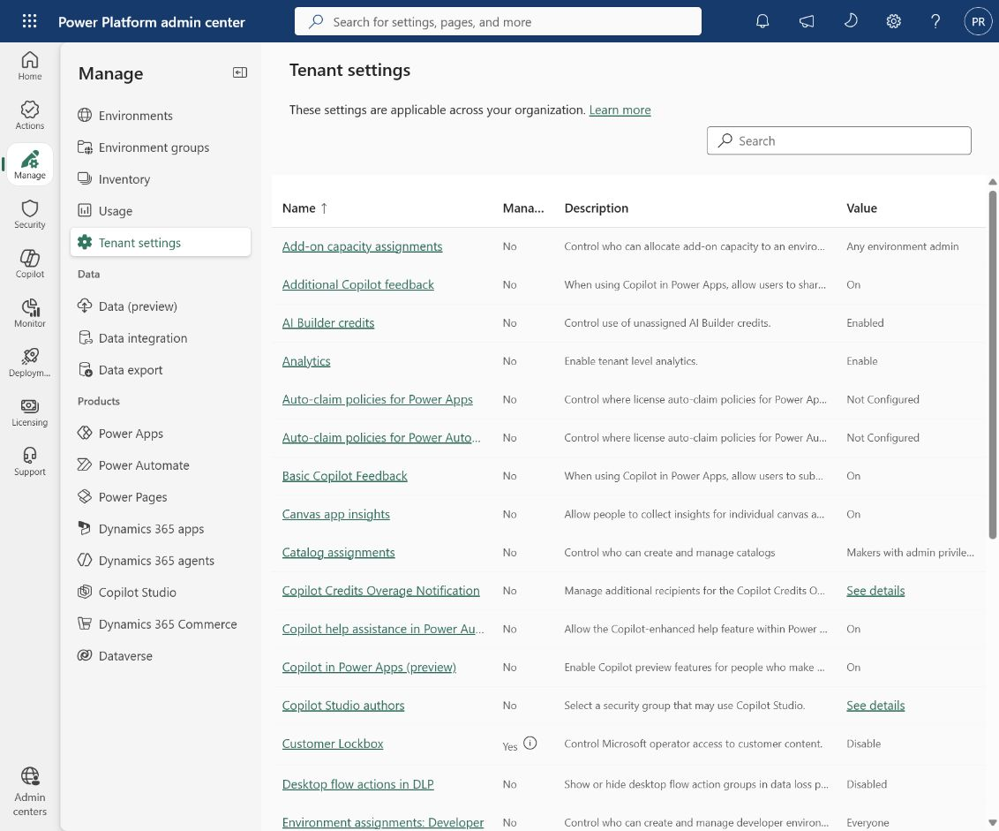
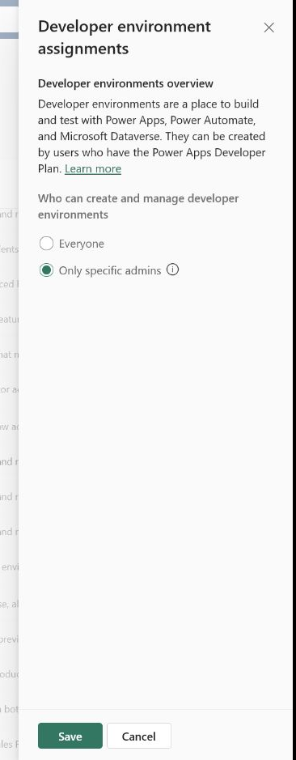
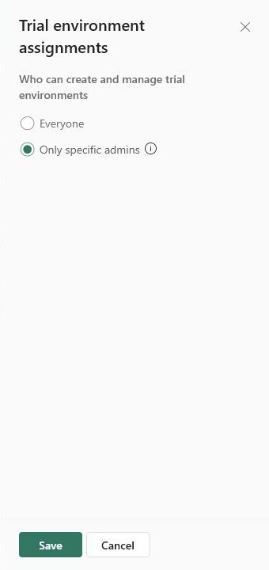
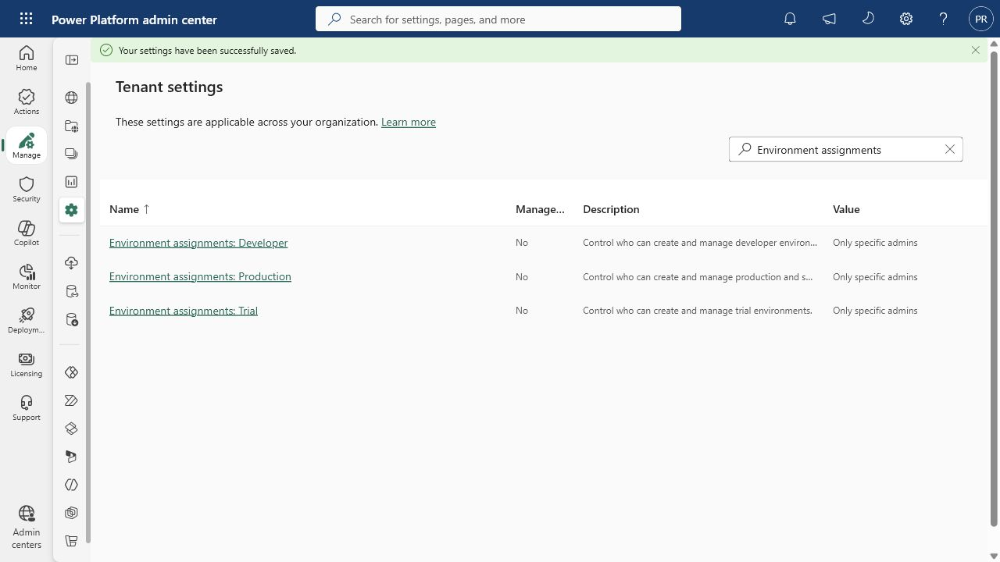
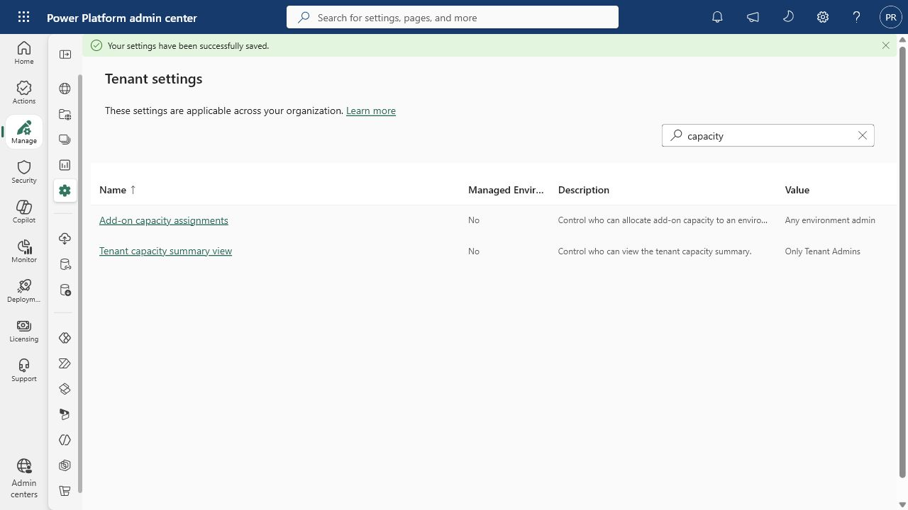

Sagar Rangi · 2026-10-15T06:28:25 · publish
Categories: Copilot Studio, Copilot Studio & Agent Factory
Tags: Agent Factory, Agent Governance, Copilot Studio, Environment Governance, Power Platform
Tenant-level governance controls for a managed Agent Factory
Power Platform tenant settings are organization-wide administrative controls in the Power Platform admin center. They define how platform capabilities and governance behaviors are applied across environments, including who may create Developer, Production, Sandbox, and Trial environments and who can administer shared capacity. Because these settings operate at tenant scope, they provide a consistent governance baseline instead of relying on individual environment owners.
For an Agent Factory, tenant settings help ensure that new environments enter an approved lifecycle instead of being created outside established environment groups, data policies, security assignments, naming standards, and application lifecycle management controls. Restricting environment creation to authorized administrators reduces sprawl and helps preserve separation between development, testing, and production.
In Power Platform admin center, select Manage and then Tenant settings. Search for Environment assignments to display the Developer, Production, and Trial creation controls.

Open Environment assignments: Developer, select Only specific admins, and save. This prevents general users from creating unmanaged developer environments outside the approved routing and environment-group design.

Open Environment assignments: Production, select Only specific admins, and save. The setting covers both production and sandbox environment creation and protects the formal Agent Factory lifecycle from ad hoc environments.
Open Environment assignments: Trial, select Only specific admins, and save. This reduces the risk of temporary environments being created without the intended Agent Factory governance and ownership controls.

After saving, the tenant-settings list was filtered for Environment assignments. Developer, Production, and Trial all displayed Only specific admins, confirming that the three restrictions persisted at tenant scope.

The capacity controls were reviewed but not changed. Add-on capacity assignments remains set to Any environment admin, while Tenant capacity summary view is limited to Tenant Admins. Restricting add-on capacity allocation is an optional hardening action and is not required to complete this environment-creation control.

A general organization-wide sharing switch is not exposed in this tenant-settings view. Power Platform sharing restrictions should be enforced through Managed Environment and environment-group rules, which are managed separately from tenant-level environment-creation controls.
Power Platform tenant settings provide the tenant-wide guardrails needed to operate an Agent Factory consistently. Restricting environment creation to authorized administrators reduces unmanaged sprawl and keeps new environments aligned with approved environment groups, data policies, security assignments, and application lifecycle management processes. These controls should be reviewed together with Managed Environments, environment-group rules, data loss prevention policies, and pipeline governance as part of a production-ready operating model.